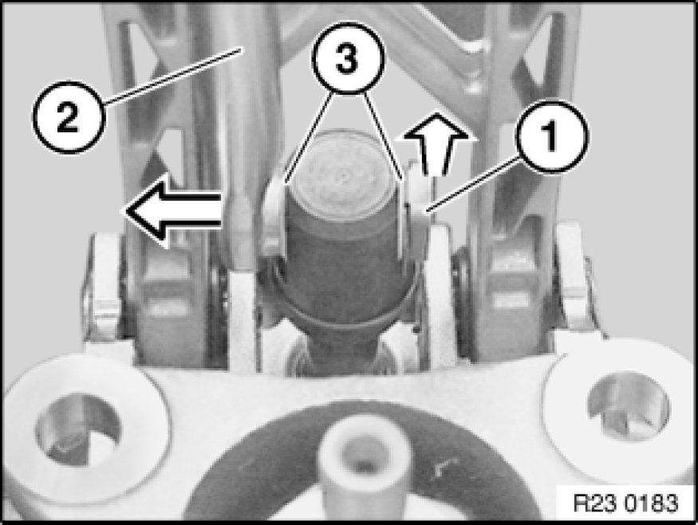
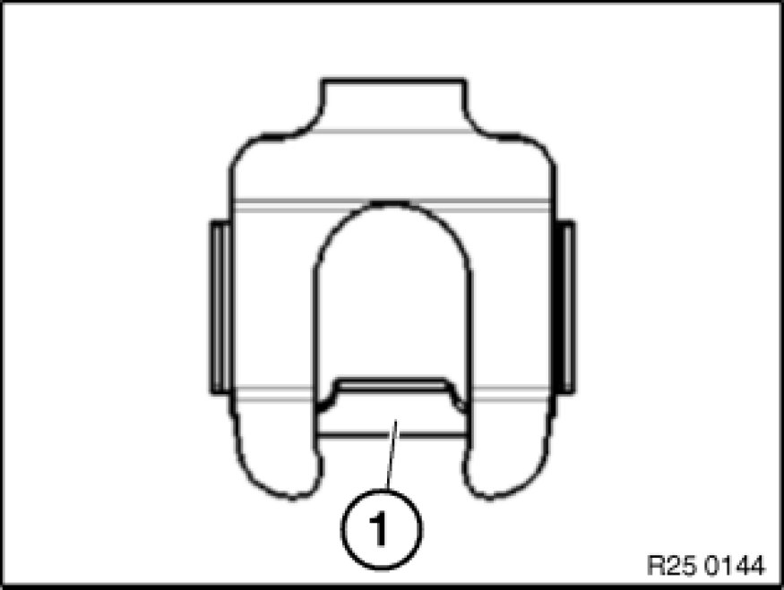
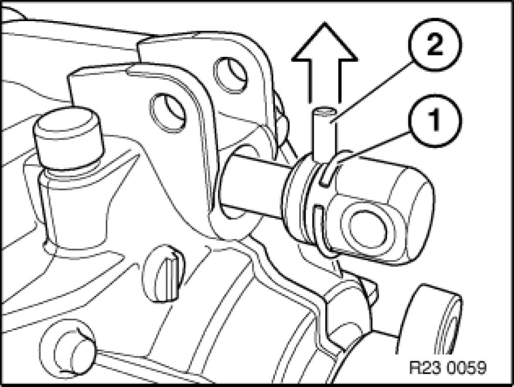
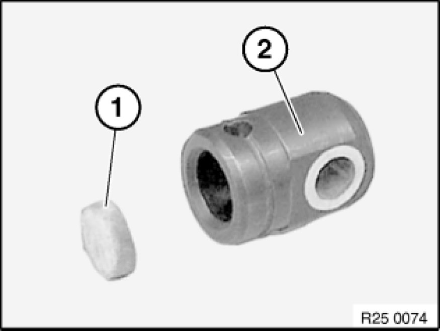

Replacing Shift Rod Joint
25 11 111 - Replacing shift rod joint

Necessary preliminary tasks:
- Remove transfer case Removing And Installing Transfer Case (ATC 400 X-Drive).

Lift off retainer (1).
Disconnect shift rod (2).
Installation:
Grease shift rod.
Grease, refer to BMW Service Operating Fluids.
Make sure shims (3) are in correct position.

Important!
New retaining clips fitted as from 04.08.
Retaining clip must interlock captively with retaining web (1) behind shift rod pin.

Lever spring washer (1) out of groove and push a little towards rear.
Press dowel pin (2) upwards/downwards out of shift rod joint and remove shift rod joint.
Installation Note:
Grease ball of selector shaft.
Grease, refer to BMW Service Operating Fluids.
Replace spring washer (1).

Installation Note:
Check rubber ring (1) in shift rod joint (2) and replace if necessary.